CS 184 Final Project: Anisotropic Scattering in Clouds
Final Report
This project attempts to augment the pathtracer created for Assignment 3-2 in order to be able to render realistic clouds from any mesh using an approach in the spirit of the iterative slab-based method of computing anisotropic scattering in clouds as described in the following research literature:
Due to time and resource constraints, completely faithful emulation of the approaches described in the literature proved to not be possible. Nonetheless, I found the process of gaining an understanding of real pieces of research literature via re-implementation (and innovation too) to be a rewarding endeavor.
Technical Walkthrough
The process that underlies my implementation of anisotropic cloud scattering can be divided into the following components:
- The CloudBSDF class in bsdf.cpp, specially marked as a cloud material (for which other existing BSDFs are marked as being non-cloud). The CloudBSDF uses the Henyay-Greenstein phase function to approximate the Mie phase function, which itself models the physical scattering of light by a homogenous sphere (such as a droplet).
|
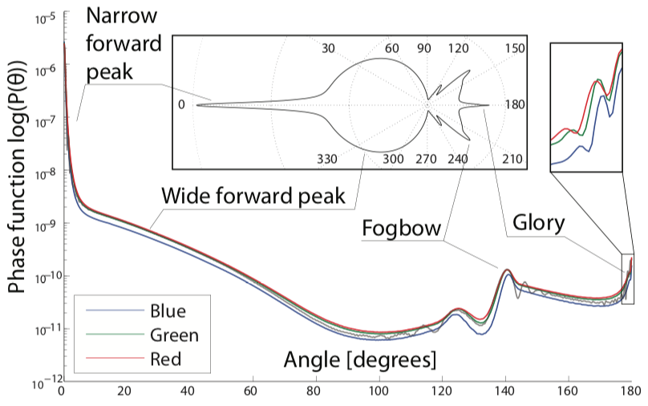
Fig 1.1: Mie phase function. Radiance is scaled as a function of the cosine between incident and exitant rays.
|
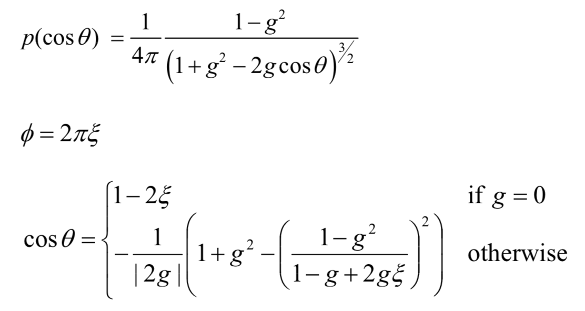
Fig 1.2: Henyay-Greenstein phase function and importance sampling.
|
For this implementation, the value of g is set to be 0.9, which yields a Henyay-Greenstein approximation of the Mie phase function that captures the anisotropic forward scattering that defines the Mie phase function at low phase angles.
-
The PolarTex class in the files polar_tex.cpp and polar_tex.h, which acts as the hypertexture (source of procedurally generated 3D textures) for this implementation. This texture uses a polar coordinate grid that is structurally similar to that used by the Project 3-2 environment map, but instead of simple numerical values, randomly generated parameters (mean depth and exponential coefficient) that define a sigmoid density function are stored in each grid entry. As expected, samples are taken by finding the nearest four grid entries to a given set of spherical coordinates before bilerping between the four sigmoid functions of said grid entries.
Two adjustable parameters of a PolarTex object include grid dimensions (how fine the procedurally generated texture is) and depth (how far into the mesh do variations in density occur).
- The helper function ray_march found in pathtracer.cpp, which carries out the following:
- Given an input ray starting at the edge of a mesh's interior, checks to see if the ray intersects with another point within the mesh interior and stores the intersection time if so.
- Computes the centroid of the mesh via averaging of the positions of all vertices in the mesh.
- From the start of the ray to the intersection, steps along at a fixed step size.
- Samples the density of the cloud at each time step before accumulating it. The density is sampled from a polar hypertexture using the polar coordinates of the currently traversed point with the centroid as the origin. The depth at a sampling point is estimated by measuring the distances along the axis of the input ray as well as 2 other axes that form a 3D basis with the input ray's axis.
- Iteration stops and the density value (opacity) is returned should the accumulated density hit 1 or the sample location step beyond the intersection point. A distance is sampled by coin flip dependent on sampled density at each time step, with the distance corresponding to the first time step to pass the coin flip being chosen.
- The function canonical_cloud_slab_radiance to pathtracer.cpp, which is called midway through at_least_one_bounce_radiance and does the following:
 Fig 1.3: Pathtracing process for a cloud object.
Fig 1.3: Pathtracing process for a cloud object.
|
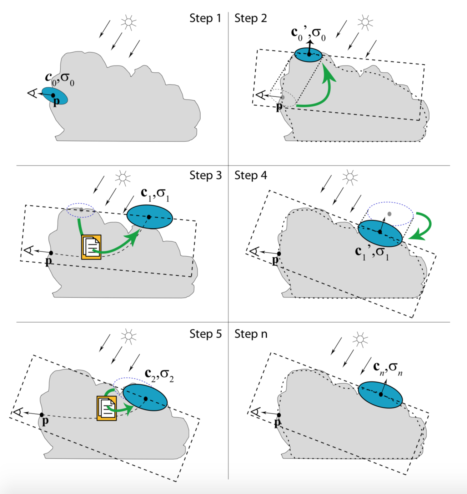
Fig 1.4: Iterative cycle of collector projection and light transport, as shown in Bouthor's work on anisotropic cloud scattering.
|
- Ends immediately if ordered to do so by Russian roulette or by the current ray depth hitting 0.
- Creates a ray facing away from the exitant ray and uses said ray to call ray_march to obtain an opacity value and a sampled point along the marched ray.
- A coin flip using the computed opacity as success probability is done. If the coin flip succeeds:
- For simplicity, samples one incident light direction from a light source and uses it for the rest of the function.
- From the sampled point, projects a ray in the direction of a light source and another ray in the direction of the input ray.
- If the lightbound ray does not collide with the same cloud mesh at all, then the local surface is treated like a normal diffuse surface.
- Otherwise, a slab (pair of planes) is formed perpendicular to the lightbound ray, with one plane tangent to the point of collision between the cloud mesh and the lightbound ray.
- Next, a group of collectors (regions with a mean location and variances along a plane) representing separate scattering orders are sampled from the slab using the canonical light transport algorithm found in the function transport_sample located in slab.cpp.
- All of the collectors are projected onto the cloud mesh, and of the collectors that successfully project onto the mesh, the collector that moved the least is checked to see if the displacement is below a certain convergence threshold. If so, the current array of collectors is finalized. Otherwise, the minimally displaced collector (or the original collector if no sampled collectors project successfully) is used to form a new slab from which transport_sample is called again. This continues until convergence is attained or iteration continues for long enough.
- The finalized group of collectors now sample many incident rays and average together the incoming radiances of the rays, subtracting from ray depth the scattering order associated with the collector. This radiance is summed up alongside a direct lighting component computed from one of the projected collectors before being scaled to account for Russian roulette termination and returned.
- Should the coin flip fail:
- A ray is transmitted directly through the mesh along the same axis as the exitant ray, and radiance is collected from the direct lighting radiance computed from the point on the other side of the mesh plus the global radiance computed at the next surface the ray hits after leaving said point. This attempts to allow transparency of clouds around their edges.
- Added the files slab.cpp and slab.h for storing various helper methods regarding slabs and collectors. Some notable functions from these files include:
- Collector::sample, which samples a location in 3D space along a collector's plane using a bivariate Gaussian. Used to sample incident rays and collect radiances to be averaged during cloud pathtracing.
- Collector::project, which projects the collector along the axis of the input ray (representing incident light direction) towards the nearest surface of the cloud mesh it belongs to. A boolean is returned stating whether the collector is able to be projected onto the mesh along the specified direction, and if so, the collector is shifted to the location on the cloud mesh, with its plane of sampling adjusted to be tangent to the surface it is on.
|
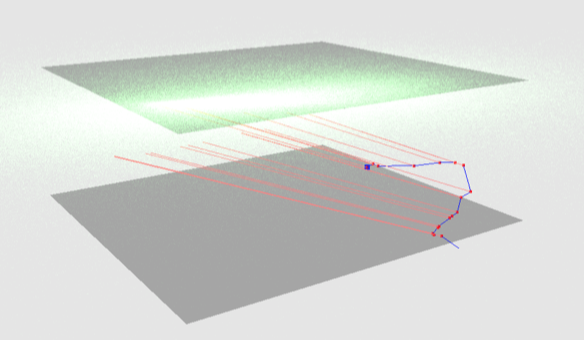
Fig 1.5: The canonical light transport algorithm performed in Slab::transport_sample.
|
- Slab::transport_sample, which samples multiple, segmented paths that wiggle towards the top of the slab using directions sampled using an extinction (probability of hitting a water droplet in a cloud given a certain distance of travel) PDF for segment length and the Henyay-Greenstein PDF for sampling segment direction relative to previous segments. At each bend in a path, a collector location is created by projecting from the bend along the incident light direction to the top of the slab. These collector locations are therefore separated by scattering order (how many bends it takes to reach this collector) and are averaged across all sampled paths to obtain the final vector of collectors. Collector variances are also computed and averaged during this process. All the sampled paths start at the same point, which is specified as an input argument. Said point is the location sampled during ray marching.
Challenges and Reflections
Some challenges I faced along the way included:
- Figuring out how to integrate new files (for slab, collector, and polar texture functions) into the existing pathtracer. I first tried directly calling make with the new files in the source directory, only to get an odd message about missing symbols from the linker. Many hours of fruitless searching through Stack Overflow questions later, I finally figured out on my own after giving the project subdirectories a closer look that I actually had to add the new files to the cmake config located in the source directory in order for the new files to be linked together properly.
- Debugging for the correctness of my polar hypertexture implementation proved to be pretty difficult due to the amount of parameters to adjust (texture depth, texture grid size, extinction coefficients, sigmoid function parameter initialization, etc.) I tackled the issue through persistent and methodical experimentation with different values, varying one parameter until the renders looked more convincing before moving onto the next parameter to tweak.
- Due to some circumstances beyond my control, my partners for this project disbanded and started a different project on their own right before the progress report was due. As such, I had to implement essentially the entirety of this project on my own. This required significant amounts of time dedicated to implementation and testing, to the point where I pulled about 4-5 all-nighters on this project and also worked on the project while working on my other two final projects this semester, just to be able to make sure my implementation was doing well every step of the way.
The implementation is far from perfect, for the following reasons:
|
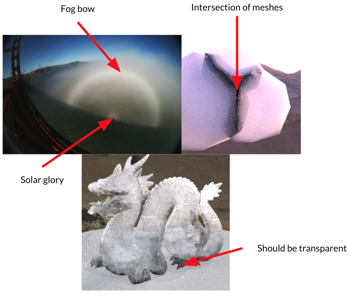
Fig 2.1: Some missing features and imperfections of the current implementation.
|
- The Henyay-Greenstein phase function doesn't fully capture all the features of the Mie phase function, leading to certain optical phenomena relating to clouds (i.e. solar glories and fog bows) being absent from the renders.
- Since the subsurface scattering process in a cloud object assumes that all the scattering takes place within a closed cloud mesh that doesn't intersect with other meshes in order to simplify ray intersection logic, renders in which multiple cloud meshes intersect (such as any of the low-poly cloud renders below) have black edges around where the meshes intersect.
- While transparency was working earlier, transmission of light through the cloud appears to function oddly once I added in ray marching and anisotropic scattering to the pathtracer. The result was that while some light from behind the cloud was being transmitted through in environmental map renders, there was a generally black background where transparent surfaces should be.
While it was certainly a grueling trek to make it to this point in the project, I feel intellectually rewarded with the ability to understand the research literature mentioned above at a deeper level thanks to hands-on experience re-implementing various segments of algorithms described in the papers. Some features of this implementation, such as the polar hypertexture, were not directly based off of research literature, and being able to put my own creative twist on existing research has proved to be an exciting pursuit.
Results
NOTE: All images are rendered using at least 2048 samples per pixel, at least 4 samples per light, max ray depth of 300, and Russian roulette termination probability of 0.3
Renders across different environment maps
|
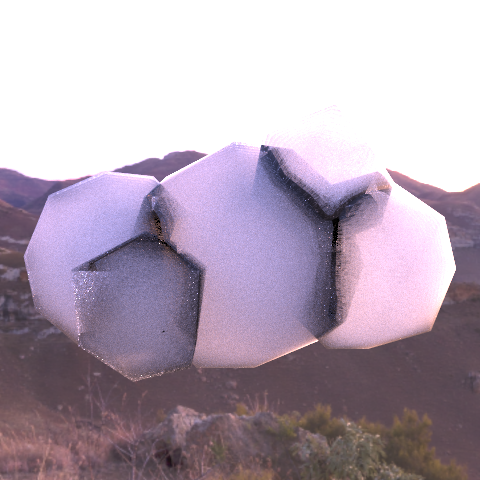
Fig 3.1: sky/Cloud_4.dae rendered in the environment map kiara_dawn.exr.
|
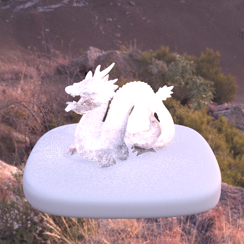
Fig 3.2: sky/dragon_cloudy.dae rendered in the environment map kiara_dawn.exr.
|
|
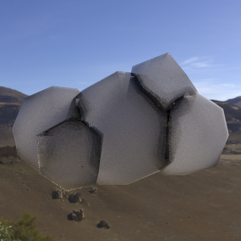
Fig 3.3: sky/Cloud_4.dae rendered in the environment map kiara_morning.exr.
|
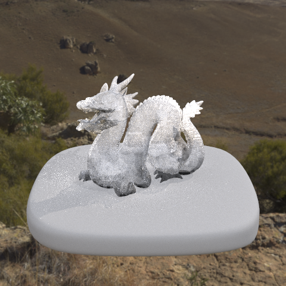
Fig 3.4: sky/dragon_cloudy.dae rendered in the environment map kiara_morning.exr.
|
|
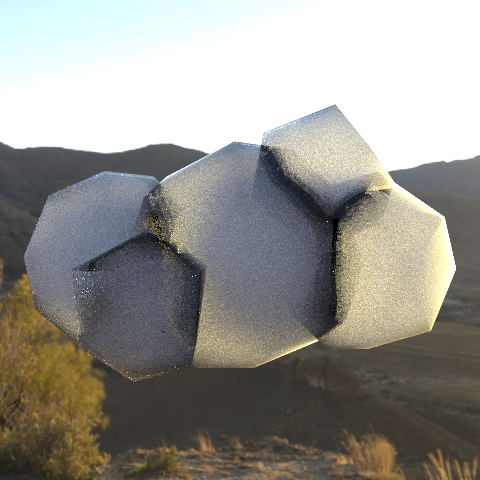
Fig 3.5: sky/Cloud_4.dae rendered in the environment map kiara_sunset.exr.
|
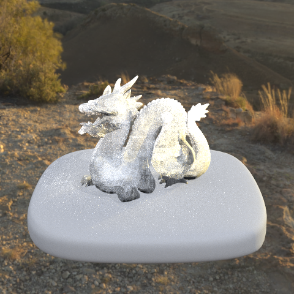
Fig 3.6: sky/dragon_cloudy.dae rendered in the environment map kiara_sunset.exr.
|
|
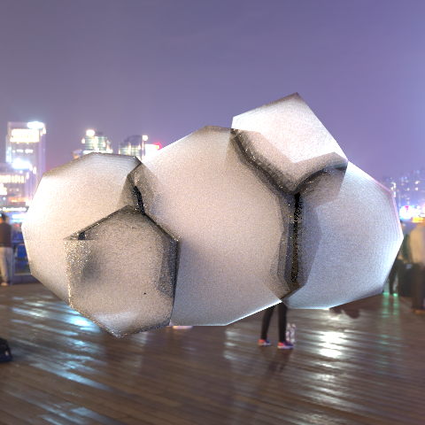
Fig 3.7: sky/Cloud_4.dae rendered in the environment map bund.exr..
|
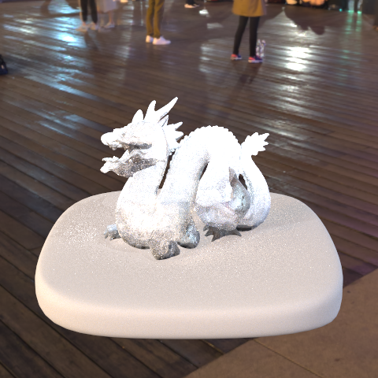
Fig 3.8: sky/dragon_cloudy.dae rendered in the environment map bund.exr.
|
Renders across different angles
|
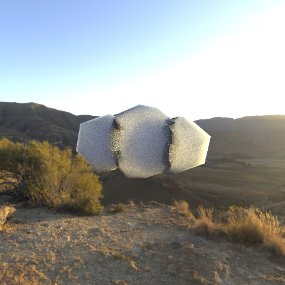
Fig 3.9: sky/Cloud_1.dae rendered in the environment map kiara_sunset.exr facing front.
|
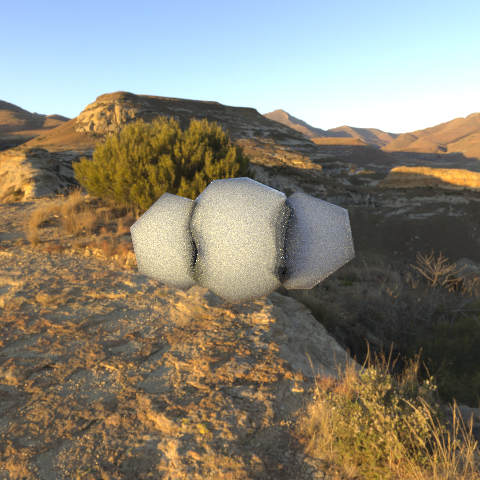
Fig 3.10: sky/Cloud_1.dae rendered in the environment map kiara_sunset.exr facing back.
|
|
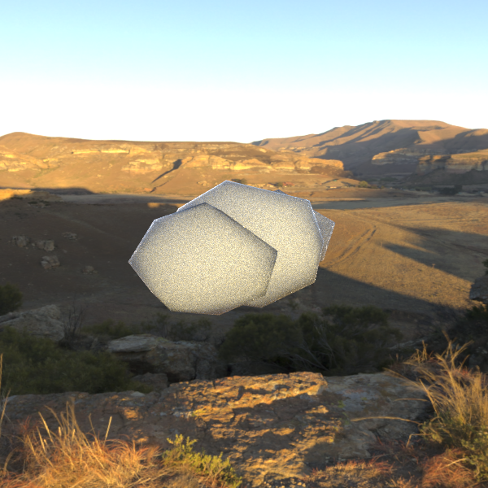
Fig 3.11: sky/Cloud_1.dae rendered in the environment map kiara_sunset.exr facing right.
|
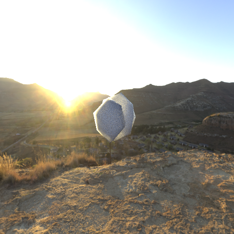
Fig 3.12: sky/Cloud_1.dae rendered in the environment map kiara_sunset.exr facing left.
|
Effects of polar texture depth
|
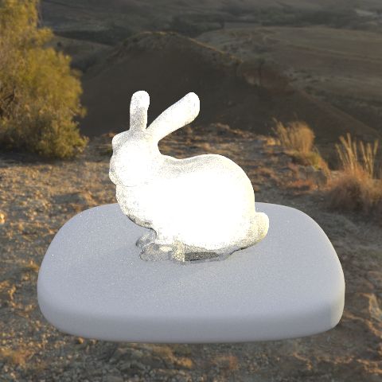
Fig 3.13: sky/bunny_cloudy.dae rendered in the environment map kiara_sunset.exr with polar texture depth of 0.01.
|
Fig 3.14: sky/bunny_cloudy.dae rendered in the environment map kiara_sunset.exr with polar texture depth of 0.1.
|
Fig 3.15: sky/bunny_cloudy.dae rendered in the environment map kiara_sunset.exr with polar texture depth of 1.0
|
Effects of polar texture grid dimensions (azimuthal x polar)
|
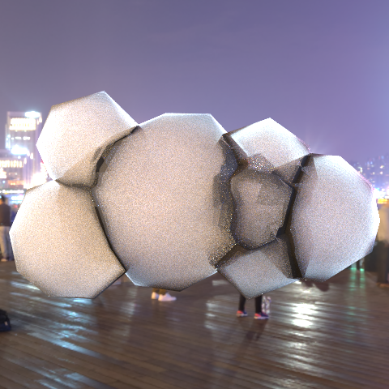
Fig 3.16: sky/Cloud_2.dae rendered in the environment map bund.exr with polar texture dimensions of 9 x 5
|
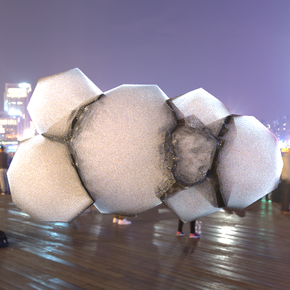
Fig 3.17: sky/Cloud_2.dae rendered in the environment map bund.exr with polar texture dimensions of 101 x 51.
|
Fig 3.18: sky/Cloud_2.dae rendered in the environment map bund.exr with polar texture dimensions of 1001 x 501.
|
Links
References
Research literature:
Image sources:
- The research literature listed above
- The project path-tracer
Team Contributions
As this is a solo project, I did all of the implementation work. However, prior to disbanding, the team I was in brainstormed quite a bit about what we could with this idea of cloud scattering, and to that I would like to give thanks to Tyler Yath and Rachael Boyle for working with me in the brainstorming process back then!